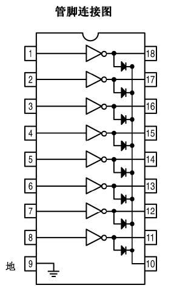

步进电机驱动板上基本都是使用的ULN2003，不过ULN2003只有7个通道，如果想同时控制两个步进电机，那么需要使用ULN2803，它有8个通道。
其实ULN2803说白了就是八个NPN三极管，没什么大花头。它的引脚如图所示：

输入引脚是左边从上往下数的8个引脚，而输出引脚是右边从上往下数的8个引脚。左右一一对应。当向左边第i个引脚输入1时，那么右边第i个引脚就会接地；而当左边第i个引脚输入0时，那么右边第i个引脚就会悬空。
使用时，9号引脚接地，10号引脚接VCC或者不接。1~8号引脚接单片机的8个IO口（注意需要较强的上拉），然后11~18引脚接步进电机。
使用时51单片机驱动ULN2803时一定要注意一点就是，输入引脚必须外接上拉电阻，不然上拉能力不够。我一开始没有接上拉电阻，结果就是，当单片机的引脚输出1时，却无法把引脚电平拉高。